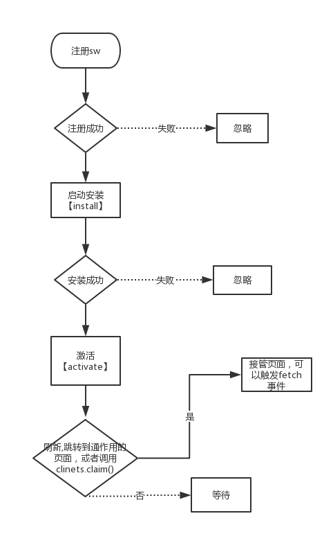
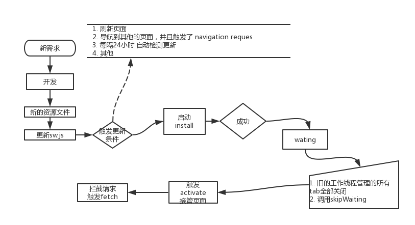

Service Worker生命周期

install-> wating->activate
第一次

安装完成
- 针对每一个工作线程 install事件只执行一次。每一个工作线程是由浏览器当前tab管理的（现代浏览器中基本上每一个tab都是一个独立的进程）。
- 一般在install中 添加我们的缓存
- 缓存资源失败 会导致install失败 从而导致服务线程
进入激活
- 收到activate事件，并不意味着马上可义控制当前的页面。默认情况下首次接收到activate事件，不会控制页面，也就是你并不能拦截到页面中的请求。
- 可以调用clients.claim 来控制客户端。但是强烈不建议这样做。原因有两个：
- 考虑到首次加载性能，一般要把注册工作线程放到 onload事件中。这样，基本上所有的资源都已经被加载完成了（除了通过用户交互异步出发的请求）
- PWA 本身强调渐进增强，及时没有本地缓存，你的应用也应该能正常使用。
更新

什么时候回触发更新？
当注册的线程脚本和正在运行的脚本的字节不同的时候，结合以下情况时候 会触发线程的更新机制
- 刷新页面
- 导航到其他的页面，并且触发了 navigation request（前端路由 h5 history模式并不会发起请求）
- 更新push或者sync事件 （由于push api的兼容性和交互设计，变得很鸡肋 不做讨论），如果24小时之内没有检测过更新
- 调用register 注册的线程脚本地址发生了改变
- 每隔24小时 自动检测更新
1 、2、4 其实属于同一类 都是需要重新请求注册线程的页面
关于服务线程的脚本的缓存策略。
因为更新服务线程脚本是更新本地缓存的正确唯一途径，所以服务线程脚本本身的更新策略 非常重要。
默认情况下，大多数浏览器都会忽略工作线程脚本的缓存头设置（Cache-Control 等），但是最好将其缓存设置为不缓存。
过程
- 更新的工作线程和之前的线程一起工作，并且启动安装，触发自己的install事件。
- 如果新服务线程失败（注册，安装），就舍弃，当前线程继续活跃。
- 安装成功之后，进入wait状态，直到当前活跃的线程不再掌控客户端（即使只打开了一个客户端，刷新的时候客户端会重叠）或者调用self.skipWaiting()